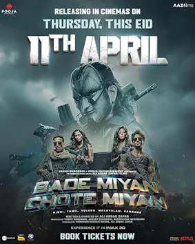

The genetics
Cloning drives the plot. Kabir, a military scientist, created clones from the DNA of the soldiers Freddy and Rocky, programmed to obey orders and able to regenerate, intending them to fight wars without risking real soldiers' lives. When the army shut the programme down as unethical, he tried to sell it to India's enemies, faked his death with his first clone, Eklavya, whom he loved like a son, and later cloned Colonel Azad to take his place. The heroes end up fighting their own copies. The film presents Kabir as an amoral and vengeful villain and uses the army's ethical refusal as its line between legitimate and illegitimate science. Clones that are born as adults with programmed loyalty and the ability to heal fatal wounds belong to fantasy; real clones would be ordinary babies with no special powers.
How genetics is portrayed
- Overall portrayal of genetics
- negative Military cloning is shown as an unethical project that a rogue scientist turns into a threat to the nation.
- Outcome of the genetic intervention
- negative The clones are used to kill Colonel Azad, kidnap Priya and nearly launch a war, and the heroes must destroy them.
- Kabir
- villain Aim: military, revenge, power (negative). He developed programmable, regenerating soldier clones for the army, tried to sell them to enemies when the project was shut down, and now uses clones to kill Azad and start a war. The film presents him as an amoral, vengeful villain whom the heroes defeat.
The story
A masked man attacks an Indian army convoy carrying a secret weapon. Captain Misha of Indian intelligence finds that the attacker's wounds heal instantly, and Colonel Azad has her recruit two court-martialled soldiers, Freddy and Rocky. With the hacker Pam they recover a stolen package from a London vault, which turns out to be Captain Priya Dixit, Freddy's former girlfriend, whose brain holds the codes of the Karan Kavach defence system. The masked man, who has shot Azad, kidnaps her and reveals himself as Kabir, a scientist the two soldiers believed they had killed seven years earlier. Kabir had proposed an army cloning programme, was ordered to shut it down as unethical and tried to sell it to India's enemies; the man Freddy and Rocky killed was his first clone, Eklavya. Kabir now commands regenerating clones of the two heroes and plans to disable Karan Kavach and launch airstrikes against Pakistan and China. The heroes destroy their clones and stop the strike, but Kabir survives.